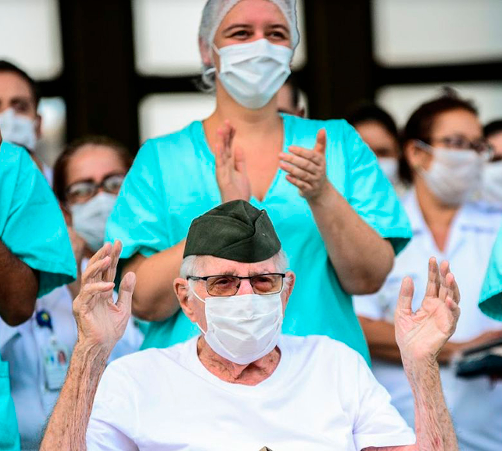

-
 Brasil registra 33.682 casos confirmados de coronavírus e 2.141 mortes
Brasil registra 33.682 casos confirmados de coronavírus e 2.141 mortes
O Brasil bateu recorde de notificações de casos confirmados de coronavírus em 24 horas, foram 3.257 novos casos no período, totalizando 33.682 em todo o Brasil. O número de mortes também aumentou, agora são 2.141 óbitos, aumento de 11,2% (217 casos) em relação ao dia anterior. As informações estão atualizadas até as 14h desta sexta-feira (17).
-
 Coronavírus: o mapa que mostra o alcance mundial da doença
Coronavírus: o mapa que mostra o alcance mundial da doença
Atualmente, o vírus está se disseminando mais rapidamente fora do país onde surgiram os primeiros casos. O mapa acima, que será atualizado duas vezes por dia, traz informações sobre o número de infectados e mortos separados por país.
-
 Quais medidas econômicas contra covid-19 já saíram do papel?
Quais medidas econômicas contra covid-19 já saíram do papel?
De acordo com o ministro da Economia, Paulo Guedes, os programas para combate à doença devem chegar a 1 trilhão de reais nas próximas semanas ou meses. Segundo ele, o déficit primário já está em 6% do Produto Interno Bruto. Na próxima terça-feira, 7, há a expectativa de que saia o calendário para o pagamento do principal programa de transferência de renda, que garante um auxílio de 600 reais a trabalhadores informais.
-
 Podcast Viralizados - Novo coronavírus. Que vírus é esse?
Podcast Viralizados - Novo coronavírus. Que vírus é esse?
NO novo coronavírus ou (a doença) Covid-19 é o assunto do momento. Tem dúvidas sobre o tema? O médico epidemiologista e pesquisador Cláudio Maierovitch, da Fiocruz Brasília, responde. No episódio de hoje, ele explica que vírus é esse e quais são os outros da mesma família já conhecidos pela ciência.
-

Homem de 99 anos é o mais velho a receber alta após contrair covid-19
Aos 99 anos, o ex-integrante da Força Expedicionária Brasileira (FEB) Ermando Piveta recebeu alta hoje (14) do Hospital das Forças Armadas (HFA), na capital federal, após internação por covid-19. Ele é o brasileiro mais velho a receber alta após tratamento do novo coronavírus.
-
 A vida depois da cura: o que fazer após ter alta da Covid-19
A vida depois da cura: o que fazer após ter alta da Covid-19
Com a expansão no número de casos confirmados de Covid-19, outra realidade ganha espaço: a das pessoas que se recuperaram da doença. Em meio a orientações sobre como se prevenir contra o novo coronavírus e o que fazer em caso de sintomas, surge uma dúvida dos que já passaram pelas duas etapas. Depois da alta, seja laboratorial (quando o exame detecta a presença de anticorpos, mas a ausência do vírus) ou clínica (os sintomas já estão ausentes há algum tempo), a pessoa pode romper o isolamento e voltar às sua rotina “normal” de atividades?
Heloisa Santhiago Moreira
Formação:Universidade Estácio de Sá: Business Intelligence (2019-2020)
Faculdade Doctum Cataguases: Sistemas de Informação (2013-2016)
Colégio Piau: Técnico em Informática para Internet (2011-2012)